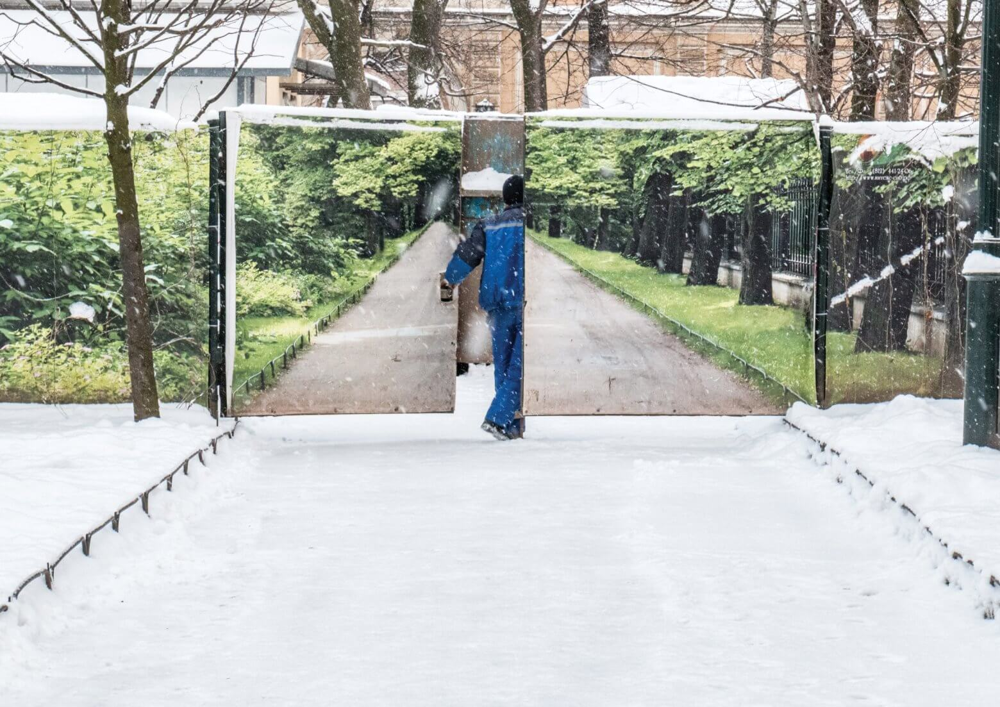

Anton Khlabov. Untitled. Yerevan, Armenia
The photograph is part of a series exploring contradictory interactions of imagined landscapes in the modern city, whether it be advertising banners or city screens. The viewer's gaze is met with a surreal combination of a harsh winter scene and the world of a fence banner filled with summer carefree feelings. The figure of the worker easily crosses the boundary between these two realities.
- - -